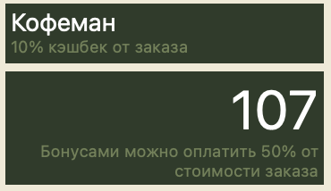
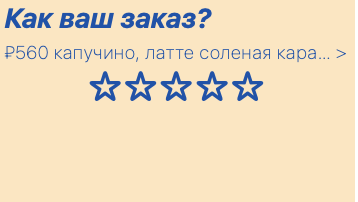
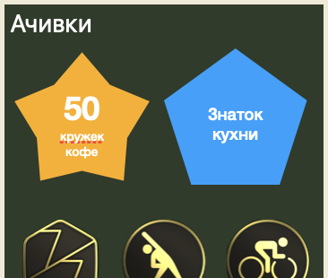
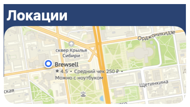
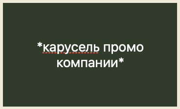
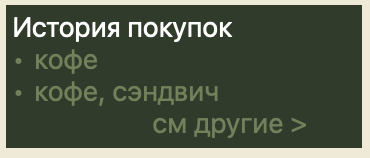

Cardly — это платформа для программ лояльности малых-средних бизнесов.
Ц.А: малый бизнес. Конкретнее, в сфере питания/обслуживания:
кафешки, шавермы, бутик свечотницы, маникюр салоны — везде где может быть программа лояльности.
Фундаментальные принципы
Быстрая регистрация (как и пользователей, так и бизнесов)
Красивый модульный дизайн с виджетами для странички каждой компании
Установление более глубоких связей с клиентами через соц. взаимодействия —
ачивки,
закрытые акции/розыгрыши и т.п., обратная связь через
фидбэк
и
ревью.
Каждая страница имеет свой стандартный вид, который задается заведением. Но пользователь в
праве сделать с ним что угодно: убрать/добавить нужные виджиты, поменять любые цвета и тп.
Визуальная концепция. Все бренды и логотипы принадлежат их владельцам
и показаны
только в качестве примера. Сотрудничество или поддержка не подразумеваются.
Что получает бизнес
Как минимум — готовый продукт программы лояльности, сохраняя стиль и имидж брэнда (отдельная
страница, где компании имеют полный* контроль того, как они хотят себя презентовать)
Фидбеки/ревью — как ещё один инструмент в арсенале менеджера
Разработать мобильное приложение Cardly — конструктор программам лояльности малого и среднего
бизнеса, позволяющий
компаниям создавать собственные брендированные карты-страницы с модульными виджетами; а
пользователям — хранить все
карты лояльности в доступном месте, получать бонусы, достижения и оставлять обратную связь в
одном удобном
интерфейсе.
Оценка основана на публичных данных о количестве предприятий МСП в России и
распространённости
CRM/маркетинг-SaaS:
В России действует ~6 млн субъектов МСП (ФНС РФ /
Минэкономразвития)
Из них ~2–3 млн работают в офлайн-рознице и сфере услуг
(розничная торговля, общепит,
медицина, услуги населению — Росстат)
По данным исследований внедрения цифровых инструментов для МСП (Data
Insight, РАЭК, СберАналитика),
20–40% малого бизнеса используют CRM/маркетинг-системы
Средний чек SaaS-решений для программ лояльности и CRM-маркетинга для малого
бизнеса в РФ:
3 000–5 000 ₽/месяц
(по публичным тарифам UDS, Mindbox SMB, RetailCRM, YCLIENTS, iiko
loyalty-модулей и др.)
Пользователь-центричная лояльность: карты в Wallet, мгновенный
вход, предзаказы,
персонализация, интеграции с системами здоровья и привычными сервисами, превращая
Cardly в сервис, которым
реально пользуются.
Обратная связь: фидбэк и ревью (см ниже п4)
Подробное описание задачи
Малый бизнес часто использует разрозненные или устаревшие программы лояльности: бумажные карты,
отдельные приложения
или сторонние сервисы без особо брендирования и гибкости. Пользователям неудобно хранить
множество карт, а компаниям
сложно поддерживать контакт с клиентами и получать качественную обратную связь.
Задача — создать систему Cardly, которая:
Обеспечивает доступ к программам лояльности заведений, зарегистрированных в Cardly,
позволяя пользователю
выпускать и использовать их карты внутри одного приложения:
Пользователь хранит все свои программы лояльности в едином интерфейсе.
Для каждого заведения существует отдельная страница:
отображается штрих-код пользователя,
показываются виджеты с информацией (баланс, уровень, меню и т.д.).
Пользователь может персонализировать отображение:
добавлять/убирать виджеты,
менять цвета,
настраивать интерфейс под себя.
Предоставляет бизнесу брендированную страницу и инструменты взаимодействия
Каждое заведение получает собственную страницу внутри платформы.
Компания контролирует:
визуальный стиль,
набор виджетов,
контент (меню, промо, акции).
Реализует модульную систему виджетов
Виджет — карточка с полезной информацией. Примеры:
баланс бонусов и уровень профиля
меню
история покупок
форма обратной связи
достижения пользователя
локации филиалов
промо-материалы
обмен баллов на мерч или благотворительность
Позволяет пользователям оставлять обратную связь двух типов
Фидбэк:
короткий отзыв (5–10 слов) + рейтинг 0–5.
доступен только после заказа,
в течение 48 часов после покупки.
используется для быстрого отслеживания проблем и формирования динамического рейтинга
для менеджеров.
Ревью:
более подробный отзыв,
три оценки: еда, персонал, атмосфера,
доступен только активным клиентам (например, >3 заказа за последний месяц),
ограничение: одно ревью в месяц/год/н-месяцев.
помогает получать глубокую обратную связь и отслеживать улучшения.
дублируются на 2ГИС/Яндекс Картах
Использует геймификацию для удержания клиентов
Система достижений тех или иных порогов (ачивки). Пример:
за количество покупок,
за исследование меню,
за уникальные активности (пример: “сладкоежка — перепробовал все комбинации
кофе/десерт”; “китолов — собрал
все виды китов Brewsell”)
Достижения могут:
иметь уровни редкости
обмениваться на бонусы, мерч или награды (или открывают возможность
приобритения)
быть уникальными для каждого заведения (заведения создают их сами)
Это усиливает вовлечённость и формирует эмоциональную привязанность к бренду.
Предоставляет комплексный дашборд для бизнесов.
Во время онбординга:
бизнес предоставляет логотип/ссылки на 2гис/яндекс/соц.страницы
ИИ
анализирует, и сама “собирает” страницу на Cardly
Бизнес дальше вносит свои поправки, или одобряет
В дашборде:
история покупок
выявление
“потерянных” клиентов
(тех, которые могли
бы ходить в заведение бизнеса, но ходят в
соседний/конкурента)
Чатбот
для менеджера, которые отвечает на вопросы по типу “жалуются ли люди
на атмосферу?", "как повлияло
<то> на <то>, если судить по отзывам/продажам" и тп.
обзор/сводка
фидбэков и ревью.
запуск персонализированых
(под каждого клиента) промо-акций.
обратная связь с клиентами (непосредственно на фидбэк/ревью).
инструменты для настройки, редактирования, персонализации всего функционала
в п2-5.
шкала/статистика/рейтинг заведения (сформирована динамически, на основании
фидбеков/отзывов)
Активный
мониторинг Фидбеков, и уведомление менеджера (через
тг/вотсап/макс/смс/почта) о
срочных проблемах.
“срочность” должно регулироваться менеджером в дашборде (продумать)
Условия реализации
✅ Данные:
Информация о бизнесе (профиль, медиа, ссылки, меню/услуги) и примеры сгенерированных страниц
с правками.
История покупок и активности пользователей (визиты, чеки, бонусы, реакции на акции).
Фидбэки и ревью с оценками, темами и срочностью, а также ответы менеджеров.
Агрегированные продажи, правила лояльности и изменения в заведении.
История промо-кампаний и отклики пользователей.
Поток событий и отзывы в реальном времени, настройки и логи уведомлений.
✅ Технологии:
Backend: Python (FastAPI), Java (SpringBoot).
Mobile: Swift, Java/Kotlin.
Web: React Native / Flutter / React, Angular.
База данных: PostgreSQL / Firebase.
Облачное хранилище для изображений и промо-контента.
Авторизация: OAuth (“Войти с <госуслуги>”)
✅ Обязательные компоненты:
Регистрация и профиль пользователя.
Страница заведения с модульными виджетами.
Отображение штрих-кода пользователя.
Система бонусов и истории покупок.
Механизм фидбэков и ревью с ограничениями.
Минимум один тип достижений (геймификация).
Интерфейс для управления заведением (админка).
✅ Ограничения:
Прототип может использовать симуляцию заказов вместо реальной интеграции с кассами.
Платежная система может быть реализована как заглушка.
Не требуется полноценный продакшен-уровень безопасности, но базовая защита данных
обязательна.
Интерфейс должен демонстрировать модульность и масштабируемость.
Проблема, которая решает задача
Программы лояльности малого и среднего бизнеса существуют, но ими почти не пользуются.
Для бизнеса запуск лояльности часто означает выбор между дорогими и сложными CRM-решениями или
простыми сервисами,
которые дают бонусную карту, но не позволяют создать полноценный брендированный пользовательский
опыт и получать
качественную обратную связь от клиентов.
Для пользователей ситуация обратная: у каждого заведения — своя карта, приложение или QR-код. В
результате карты
теряются, приложения не устанавливаются, а сами программы лояльности используются редко и не
формируют привычку
возвращаться.
Проблема рынка — не отсутствие программ лояльности, а их низкая реальная вовлечённость и
полезность для клиента.
Cardly решает эту проблему, объединяя:
единое пространство для всех программ лояльности пользователя,
брендированные страницы заведений вместо обезличенных карт,
обратную связь, привязанную к реальным покупкам,
геймификацию и инструменты вовлечения, формирующие регулярное использование.
Результат — программа лояльности превращается из формальной скидочной системы в сервис, который
клиент действительно
использует, а бизнес получает больше повторных визитов и данных о клиентском опыте.
Cardly › Фидбэк и ревью
Фидбэк и ревью — два вида отзывов
Фидбэк — короткий отзыв на 5-10 слов, с одним рейтингом (0-5 звезд). Фидбэк возможно
сделать
только при следующих условиях:
Пользователь оставляет фидбэк на конкретный заказ. Нет заказа — нет фидбэка
Один фидбэк в течение одного часа
Фидбэк можно оставить в течение 48ч после совершения покупки
Цель фидбэков:
Предоставить пользователям возможность дать обратную связь на те или иные мелочи, не нагружая
персонал (или наоборот — подбодрить добрым словом).
Предоставить менеджеру более точный инструмент для отслеживания потенциальных проблем (та же
“книга
для жалоб и пожеланий” — но доступнее всем).
Фидбеки видны всем пользователям (на отдельной странице) со всеми остальными отзывами.
На основании фидбэков формируется
динамический
рейтинг
— мини рейтинг за день. Данный рейтинг виден только
менеджерам заведения.
Примеры фидбэков:
Ревью — более раскрытый отзыв с тремя рейтингами (0-5 звезд: еда,
персонал, атмосфера). Ревью пользователь может оставить при следующих условиях:
Пользователь произвел более 5 заказов, за последние 14 (или 30) дней.
Одно ревью в месяц (или n–месяцев).
Цель ревью:
Получить более раскрытый отзыв от пользователя
Быть более актуальными чем обычные отзывы в 2ГИС/Яндекс (благодаря тому, что ревью (а)может
оставить только клиент, (б)можно оставить ещё раз через n-месяцев
Cardly › Виджиты
Виджит — это карточка с полезной информацией
Примеры виджетов:
Виджет с балансом и уровнем профиля

Виджет с меню
Виджет для фидбэк от пользователя

Виджет с ачивками пользователя

Подробнее про ачивки
Ачивки (или достижения) — это один из способов геймификации программы лояльности.
Для кого-то — приятные ощущения постоянки; для других — гордая коллекция
красивых, уникальных для каждого заведения изображений, которые можно обменять
на плюшки на усмотрение компании (стикеры, мерч, продукты питания и т.п.).
Примеры
Самые банальные:
50 чашек кофе / шаверм / цветов
100 чашек кофе
500 чашек кофе
1000 чашек кофе
Испробовал каждую позицию в меню
10 походов в салон красоты
Более уникальные, разработанные заведением (самостоятельно или с нашей
поддержкой):
Киты в БрюСель — можно нарисовать 50 уникальных китов:
40 обычных, 6 редких, 3 суперредких и 1 ультраредкий.
Получение ультраредкого кита даёт специальную ачивку.
Виджет с локациями филлиалов

Виджет с промо материалами от компании
По сути изображения либо с ссылками на их основной сайт, либо прямо в приложении

История покупок

Дополнительные виджеты
Обмен баллов на мерч или пожертвование в благотворительные фонды (не баллов а денег)